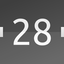
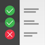
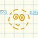
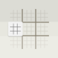
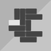
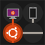

Programme
Dieser Artikel bezieht sich auf Ubuntu Touch, die Variante von Ubuntu für mobile Geräte mit Touchscreen.
Getestet wurde der Artikel für folgende Version(en):
Ubuntu Touch 15.04 Vivid Vervet
 Eine Auswahl an essentiellen Programmen und Scopes, welche nachinstalliert werden können, sind in der Tabelle aufgelistet. Die hinterlegten Links sind zur direkten Verwendung im Ubuntu Phone/Tablet vorgesehen. Eine komplette Übersicht findet man auf der inoffiziellen Übersicht uApp Explorer
Eine Auswahl an essentiellen Programmen und Scopes, welche nachinstalliert werden können, sind in der Tabelle aufgelistet. Die hinterlegten Links sind zur direkten Verwendung im Ubuntu Phone/Tablet vorgesehen. Eine komplette Übersicht findet man auf der inoffiziellen Übersicht uApp Explorer  . Mit dem Webapp-Generator können eigene Webapps erstellt werden.
. Mit dem Webapp-Generator können eigene Webapps erstellt werden.
ist ein Direktlink auf die Internetseite des uApp Explorers. Beim Aufruf eines mit gekennzeichneten Links wird der Ubuntu Store auf dem Ubuntu Phone/Tablet geöffnet und die Installation kann initiiert werden.
Ubuntu Store¶
Anwendungen¶
| Anwendungen | |||
| Logo | Programm | Beschreibung | Ubuntu Store |
| Büro | |||
|  | Calendar | Programm zur Terminverwaltung. | Calendar |
| Document Viewer | Dokumentenbetrachter für die gängigsten Formate. | Document Viewer | |
| Notes | Notizen erstellen und auf dem Gerät verwalten. (Wird nicht mehr gewartet) | Notes | |
| Notes | Erinnerungen können mit Evernote abgeglichen werden. | Notes | |
| Internet | |||
| Authenticator | Zwei-Faktor-Authentifizierung | Authenticator | |
| Dekko | E-Mail-Programm | Dekko | |
| Liri Browser (Alpha) | Alternativer Webbrowser für UT. | Liri | |
| Shorts | RSS-Channels mit diesem Programm abonnieren - z.B. ubuntuusers.de. | Shorts | |
| Multimedia | |||
| Beru | E-Book-Reader, um elektronisch gespeicherte Buchinhalte darzustellen (EPUB, CBZ und PDF). | Beru | |
| Kodimote | Fernbedienung für das Mediacenter Kodi. | Kodimote | |
| Podbird | Podcasts anschauen oder herunterladen. | Podbird | |
| uRadio | Internetradio-Streams abspielen. | uRadio | |
| System | |||
| edIt | Die mit dem Editor erstellten Dateien werden unter ~/.local/share/com.ubuntu.developer.pawstr.edit gespeichert. | Editor | |
| File Manager | Dateimanager auf dem Telefon. | File Manager | |
| Logviewer | Logdateien unter /var/log/ und /home/phablet/.cache/ ansehen | Logviewer | |
 | Permy | Die Rechte von Anwendungen anzeigen lassen. | Permy |
| Terminal | Das Terminal auf dem Telefon verwenden. | Terminal | |
| Hilfe | |||
| Checkbox | Programm um das System zu testen. | Checkbox | |
| Help | Grundinformationen/Hilfe zu Ubuntu Touch. | Help | |
|  | Pilot | Programm um Tests auf dem Gerät durchzuführen. Die Ergebnisse werden an das QATeam übermittelt. | Pilot |
| Sonstiges | |||
| recorder | Audioaufnahmen starten. Diese werden unter ./.local/share/recorder.pramathesh gespeichert. | recorder | |
| Tagger | QR-Code einlesen und Suchergebnisse anzeigen lassen. | Tagger | |
| uTorch | Taschenlampe für das Phone. | uTorch | |
Ortsbasierte Anwendungen¶
Da für Mobilgeräte ortsbasierte Anwendungen besonders wichtig sind, sollen sie hier extra zusammengefasst werden. Dabei steht neben der Usability die Datenvermeidung und Datensparsamkeit im Fokus. Funktionen, die keine Anmeldung erfordern sind daher grün markiert, genauso wie Funktionen, die offline nutzbar sind.
| Navigation | ||||||||||
| Logo | Programm | Karten-Quelle | Modi | Navigation | Sprachnavigation | Anzeige | Suchverlauf | Favoriten | Display | Ubuntu Store |
| Google Maps | eigene Daten | ? | keine Navigation | ? | ? | ? | Google-Maps | |||
| Here Maps | eigene Daten | online | Auto, Fussgänger, Fahrrad | englisch (nur Fussgänger) | benötigte Zeit und Strecke | ohne Anmeldung | mit Anmeldung | wird beim navigieren gesperrt | HereMaps | |
| OSMScout | OpenStreetMap | Offlinekarten laden integriert | Auto, Fussgänger, Fahrrad | englisch | Geschwindigkeit, Entfernung und Zeit bis zum Ziel | nicht aufrufbar | ohne Anmeldung | bleibt beim navigieren an | OSMScout | |
| uNav | OpenStreetMap | Routing nur online, offline Karten laden mit JTileDownloader | Auto, Fussgänger, Fahrrad | deutsch | Zeit und Weg bis Ziel, Ankunftszeit | ohne Anmeldung | ohne Anmeldung | bleibt beim navigieren an | uNav | |
| Sonstiges | |||||
| Logo | Programm | Bemerkung | Anmeldung | Speicherort Benutzerdaten | Ubuntu Store |
| TankenApp | Spritpreise ermitteln und anzeigen lassen inkl. Kartenansicht. | nicht erforderlich | keine | TankenApp | |
| Verkehrsinfo-DE | aktuelle Staumeldungen, ohne Karte. | nicht erforderlich | keine | Verkehrsinfo | |
Instant Messenger¶
Da Instant Messenger für Mobilgeräte besonders beliebt sind, sollen sie hier extra zusammengefasst werden. Dabei steht neben der Verschlüsselung die Datenvermeidung und Datensparsamkeit im Fokus. Programme, die Nachrichten Ende-zu-Ende verschlüsseln sind daher grün markiert, genauso wie Programme, die auf das Auslesen des lokalen Telefonbuchs verzichten.
| Instant Messenger | |||||||
| Logo | Bemerkung | Austausch von | Verschlüsselung | Daten für Anmeldung | Verifizierung der Daten | Adressbuch auslesen | Ubuntu Store |
| Telegram | Nachrichten, Photos, Videos, Dateien | auf Server, "geheime Nachrichten" auch Ende-zu-Ende | ? | ? | optional | Telegram | |
| TextSecure (Signal) | keine SMS | Ende-zu-Ende | ? | ? | ? | TextSecure | |
Spiele¶
| Spiele | |||
| Logo | Programm | Beschreibung | Ubuntu Store |
| Action | |||
|  | Falldown | Durch Bewegung des Geräts den Ball schnell nach unten fallen lassen. | Falldown |
| Neverball | Neverball ist ein Geschicklichkeitsspiel in dem man mit einem Ball alle Münzen einsammeln muss. | Neverball | |
| Pathwind | Mit dem Jet-Pack auf dem Rücken weicht man den Hindernissen aus und versucht so lange wie möglich zu überleben. | PathWind | |
| Adventure | |||
| Beneath A Steel Sky | Wird Robert Foster in diesem dystopischen Adventure die Freiheit erlangen? | ScummVM | |
| Flight Of The Amazon Queen | Die Amazon Queen stürzt ab - können die Insassen gerettet werden? | ScummVM | |
| Denkspiele | |||
| 2048 native | Durch geschicktes verschieben und kombinieren anderer Kacheln muss die Zahl 2048 erreicht werden. | 2048 | |
| Cut the rope | Kommerzielles Puzzle-Videospiel. | Cut the rope | |
| Dotty | In 30 Zügen so viele Punkte wie möglich miteinander verknüpfen. | Dotty | |
| Mines | In diesem Logikspiel muss man die versteckten Minen finden. | Mines | |
|  | Sudoku | Sudoku ist ein Zahlenpuzzle. | Sudoku |
|  | Swipeout | Ziel des Spiels ist es durch verschieben der anderen Blöcke den weißen Block zum Ausgang zu bringen. | Swipeout |
|  | Ubuntu Netwalk | Bringe durch drehen der einzelnen Elemente das Netzwerk wieder ans Laufen. | Ubuntu Netwalk |
| Sport | |||
| Neverputt | Minigolf-Spiel | Neverputt | |
| Tux Racer | In Extreme Tux Racer die verschneite Piste herunterrasen und dabei Fische einsammeln. | Tux Racer | |
| Strategie | |||
| Machines vs. Machines | Verhindere mit Verteidigungsanlagen, dass der Gegner die andere Seite der Karte erreicht. | Machines vs Machines | |
| Monsterwars | Strategiespiel in dem es darum geht alle Monster zu erobern. | Monster Wars | |
Wiki¶
| Wikiartikel | |||
| Logo | Beschreibung | Link | |
| Hardware | |||
| Die Pebble mit dem Ubuntu Phone nutzen. |  RockWork RockWork | ||
| Stores | |||
| Inoffizieller Store für Ubuntu Touch | OpenStore | ||
Deinstallation¶
Die Anwendungen können, wie unter Ubuntu Store beschrieben, vom Gerät entfernt werden.
Links¶
Systemeingriff - Hotspot, Fenstermodus, Werbeblocker, Scripte...
Terminal - Befehle auf UT, auch als App
Tipps - Bildschirmfotos, externe Tastatur...
Webapp-Generator - fehlende (Web-) Apps kinderleicht selbst erstellen
Offline navigation with the Ubuntu BQ Aquaris E4.5 - OSMScout

- Erstellt mit Inyoka
-
 2004 – 2017 ubuntuusers.de • Einige Rechte vorbehalten
2004 – 2017 ubuntuusers.de • Einige Rechte vorbehalten
Lizenz • Kontakt • Datenschutz • Impressum • Serverstatus -
Serverhousing gespendet von